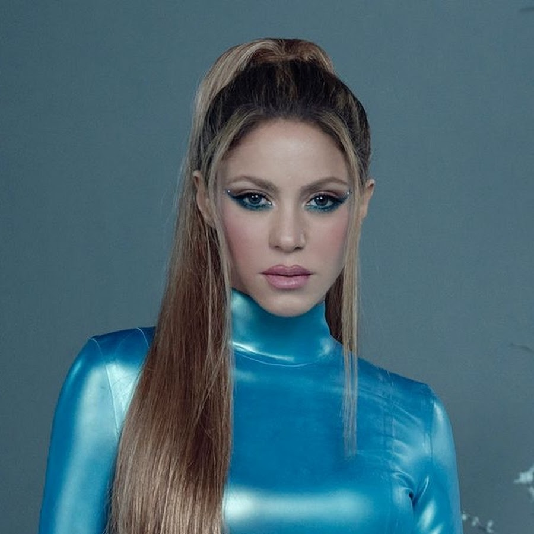
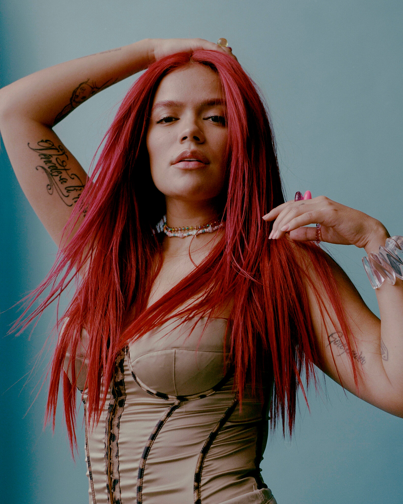
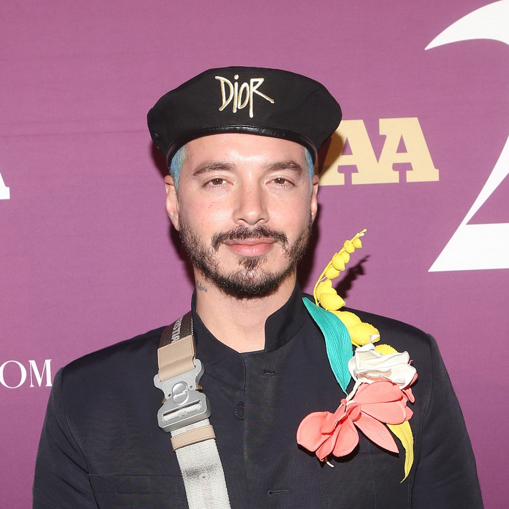

Top 7 Most Listened Latin Artists


| Rank | Artist | Age | Country of Origin | Most Played Song | Lastest Album | # of Monthly Spotify Listeners |
|---|---|---|---|---|---|---|
| 1) Shakira |  | 46 years | Colombia | Hips Don't Lie | El Dorado | 81.777.534 listeners |
| 2) Bad Bunny | |
29 years | Puerto Rico | Me Porto Bonito | Un Verano Sin Ti | 64,811,463 listeners |
| 3) Karol G |  | 32 years | Colombia | Tusa | Mañana Será Bonito | 57.748.663 listeners |
| 4) J Balvin |  | 37 years | Colombia | La Canción | Colores | 51.029.359 listeners |
| 5) Daddy Yankee | 46 years | Puerto Rico | Con Calma | Legendaddy | 50.479.435 listeners | |
| 6) Bizarrap | 24 years | Argentina | Quevedo: Bzrp Music Sessions, Vol. 52 | N/A | 49.899.321 listeners | |
| 7) Rauw Alejandro | |
30 years | Puerto Rico | Todo de Ti | Saturno | 41.853.290 listeners |